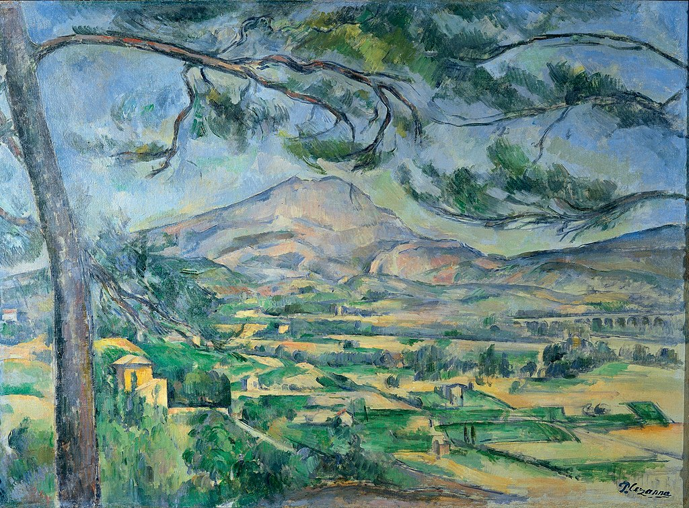

<head>
<meta charset="UTF-8" />
<meta name="keywords" content="drawing, painting" />
<meta name="description" content="drawings by Sunjy" />
<title>Sunjy</title>
<link rel="shortcut icon" type="image/x-icon" href="../../mImages/mCommon/favicon.ico" media="screen" />
<link rel="stylesheet" type="text/css" href="../../mCsses/mCommon/mCssA.css" />
<link rel="stylesheet" type="text/css" href="../../mCsses/mCommon/mCssB.css" />
<link rel="stylesheet" type="text/css" href="../../mCsses/mCommon/mCssC.css" />
<link rel="stylesheet" type="text/css" href="../../mCsses/mCommon/mCssD.css" />
<link rel="stylesheet" type="text/css" href="../../mCsses/mContent/mCssA.css" />
<link rel="stylesheet" type="text/css" href="../../mCsses/mContent/mCssB.css" />
<link rel="stylesheet" type="text/css" href="../../mCsses/mContent/mCssC.css" />
<link rel="stylesheet" type="text/css" href="../../mCsses/mContent/mCssD.css" />
</head>
<script type="text/javascript" src="../../mScripts/mContent/mContentAA.js" /></script>
<script type="text/javascript" src="../../mScripts/mContent/mContentAB.js" /></script>
<script type="text/javascript" src="../../mScripts/mContent/mContentAC.js" /></script>
<script type="text/javascript" src="../../mScripts/mContent/mContentAD.js" /></script>
<script type="text/javascript"></script> 
<script type="text/javascript">
document.write('<div class="mImgAbsolute"></div>');
/*
document.write('<p class="mFontSizeBColor" />From a white paper...</p>');
document.write('<table class="center"><tr><td>');
document.write('');
document.write('</td></tr></table>');
*/
</script>


<script type="text/javascript">
document.write('<p class="mFontSizeBColor" />Mont Sainte-Victoire</p>');
document.write('<p class="mFontSizeSColor" />Mont Sainte-Victoire by Paul Cézanne depicts Mont Sainte-Victoire seen from Montbriant in Aix-en-Provence.<br><br>Cézanne shows the railway bridge on the Aix-Marseille line at the Arc River Valley in the center on the right side of this picture.<br><br>Cézanne spent a lot of time in Aix-en-Provence in southern France at the time and developed a special relationship with the landscape.<br><br>In this painting, the view has been cropped so that the pines are only visible on the left and top. The branches follow the contours of the Montagne Sainte-Victoire.<br><br>By focusing on a small part of the plain before him, Cézanne has made the distant mountain seem closer and more significant than in other versions of this series.<br></p>');
document.write('<table class="center" /><tr><td>');
document.write('<br>Cézanne shows the railway bridge on the Aix-Marseille line at the Arc River Valley in the center on the right side of this picture.<br><br>Cézanne spent a lot of time in Aix-en-Provence in southern France at the time and developed a special relationship with the landscape.<br><br>In this painting, the view has been cropped so that the pines are only visible on the left and top. The branches follow the contours of the Montagne Sainte-Victoire.<br><br>By focusing on a small part of the plain before him, Cézanne has made the distant mountain seem closer and more significant than in other versions of this series.<br>" />');
document.write('</td></tr></table>');
</script>


